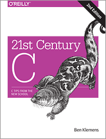

Resources
Course Materials from Previous Offerings
Archives of course materials from previous offerings of this class are available at https://inst.eecs.berkeley.edu/~cs162/<sem><year>. For example:- Fall 2020: https://inst.eecs.berkeley.edu/~cs162/fa20
- Summer 2020: https://inst.eecs.berkeley.edu/~cs162/su20
- Spring 2020: https://inst.eecs.berkeley.edu/~cs162/sp20
- Fall 2019: https://inst.eecs.berkeley.edu/~cs162/fa19
- Summer 2019: https://inst.eecs.berkeley.edu/~cs162/su19
- ... and so on for earlier semesters.
Ladder
Some of our past TA's have created a helpful resource to help brush up on C. This is a work in progress, but let us know how we can improve it. Special thanks to Jason Chin!Online Textbooks

|
Version Control with Git Complete reference on Git. Covers almost anything you want to know about using Git. |
O'Reilly Media, Inc. Free On-Campus (Safari Books): HERE |
|
Head First C Head First C provides a complete learning experience for C and structured imperative programming. |
O'Reilly Media, Inc. Free On-Campus (Safari Books): HERE |
|
|  |
21st Century C With this revised edition of 21st Century C, you’ll discover up-to-date techniques missing from other C tutorials, whether you’re new to the language or just getting reacquainted. |
O'Reilly Media, Inc. Free On-Campus (Safari Books): HERE |
Exams
| Term | Instructor | Midterm 1 | Midterm 2 | Midterm 3 | Final |
| sp21 | Joseph/Crooks | pdf sol | pdf sol | pdf sol | |
| fa20 | Kubiatowicz | pdf sol | pdf sol | pdf sol | |
| su20 | Kumar | pdf sol | pdf sol | pdf sol | pdf sol |
| sp20 | Kubiatowicz | pdf sol | |||
| fa19 | Culler | pdf sol | pdf sol alt-pdf alt-sol | ||
| su19 | Kolb | pdf sol | |||
| sp19 | Kubiatowicz | pdf sol | pdf sol | pdf sol | |
| fa18 | Stoica | pdf sol | pdf sol | pdf sol | |
| sp18 | Joseph/Ragan-Kelley | pdf sol | pdf sol | pdf sol | |
| fa17 | Stoica | pdf sol | pdf sol | pdf sol | |
| sp17 | Stoica | pdf sol | pdf sol | pdf sol | |
| fa16 | Joseph | pdf sol | pdf sol | pdf sol | |
| sp16 | Joseph | pdf sol | pdf sol | ||
| fa15 | Kubiatowicz | pdf sol | pdf sol | ||
| sp15 | Kubiatowicz | pdf sol | pdf sol | ||
| fa14 | Culler | pdf sol | pdf sol | ||
| fa13 | Joseph | pdf sol | pdf sol | ||
| sp13 | Joseph | pdf sol | |||
| fa12 | Stoica | pdf sol | |||
| sp12 | Joseph/Stoica | pdf sol | |||
| fa11 | Joseph/Stoica | pdf sol | |||
| sp11 | Stoica | pdf sol | |||
| fa10 | Kubiatowicz | pdf sol | |||
| sp10 | Stoica | pdf sol | |||
| fa09 | Kubiatowicz | pdf sol | |||
| fa08 | Kubiatowicz | pdf sol | pdf sol | ||
| sp08 | Joseph | pdf sol | pdf sol | ||
| fa07 | Kubiatowicz | pdf sol | pdf sol | ||
| sp07 | Smith | ||||
| fa06 | Kubiatowicz | pdf sol | pdf sol | ||
| sp06 | Joseph | pdf sol | pdf sol | ||
| fa05 | Kubiatowicz | pdf sol | pdf sol | ||
| fa04 | Smith | pdf sol | |||
| sp04 | Joseph | pdf sol | |||
| fa03 | Smith | ||||
| sp03 | Joseph | pdf sol | pdf sol | ||
| fa02 | Smith | sol | sol | ||
| sp02 | Joseph | pdf sol | |||
| fa01 | Smith | ||||
| sp01 | Joseph | pdf sol | |||
| fa00 | Smith | pdf sol | pdf sol | ||
| sp00 | Franklin | ||||
| fa99 | Joseph | pdf sol | pdf sol | ||
| sp99 | Joseph | pdf sol |
Readings
- John R. Garman, "The Bug Heard 'round the World,"
ACM SIGSOFT Software Engineering Notes, Vol 6 No 5, Oct 1981 - Nancy Leveson, "Medical Devices: The Therac-25,"
Safeware: System Safety and Computers, Adison-Wesley, 1995 - Queuing Theory References
- Queuing section from Appendix D of "Computer Architecture: A quantitative approach" second edition by Hennessy and Patterson
- A bunch of resources on Queuing Theory
- Queuing section from Appendix D of "Computer Architecture: A quantitative approach" second edition by Hennessy and Patterson
- File Systems:
- The UNIX Time-Sharing System. D.M. Ritchie and Kk. Thompson. ACM Symposium on Operating Systems Principles, October 1973
- A Fast File System for UNIX. M. McKusick, W. Joy, S. Leffler, and R. Fabry. ACM Transactions on Computer Systems, Vol 2, No 3, August 1984, Pages 181-197
- Analysis and Evolution of Journaling File Systems. Vijayan Prabhakaran, Andrea C. Arpaci-Dusseau, and Remzi H. Arpaci-Dusseau. USENIX Technical Conference, 2005
- The Design and Implementation of a Log-Structured File System, Mendel Rosenblum and John K. Ousterhout. Proceedings of the 13th ACM Symposium on Operating Systems Principles (SOSP), October 1991
- F2FS: A New File System for Flash Storage. Changman Lee, Dongho Sim, Joo-Young Hwang, and Sangyeun Cho. Proceedings of the 13th USENIX Conference on File and Storage Technologies (FAST 2015)
- RAID/Erasure Coding
- A Case for Redundant Arrays of Inexpensive Disks (RAID), David patterson, Garth Gibson, and Randy Katz, ACM SIGMOD conference, 1988
- EVENODD: an optimal scheme for tolerating double disk failures in RAID architectures, M. Blaum, J. Brady, J. Bruck and J. Menon. Proceedings of the 21st International Symposium on Computer Architecture (ISCA), 1996
- Distributed Systems: RPC
- Distributed Systems: NFS
- End-to-End Design
- Van Jacobson's TCP Paper
- The Byzantine Generals Problem. Leslie Lamport, Robert Shostak, and Marshall Pease. ACM Transactions on Programming Languages and Systems, Vol 4, No. 3, July 1982, Pages 382-401
- Smart Sensors to Network the World
- Experience with processes and monitors in Mesa.
- Dynamo: Amazon's Highly Available Key-value Store
- Chord: A scalable peer-to-peer lookup service for internet applications